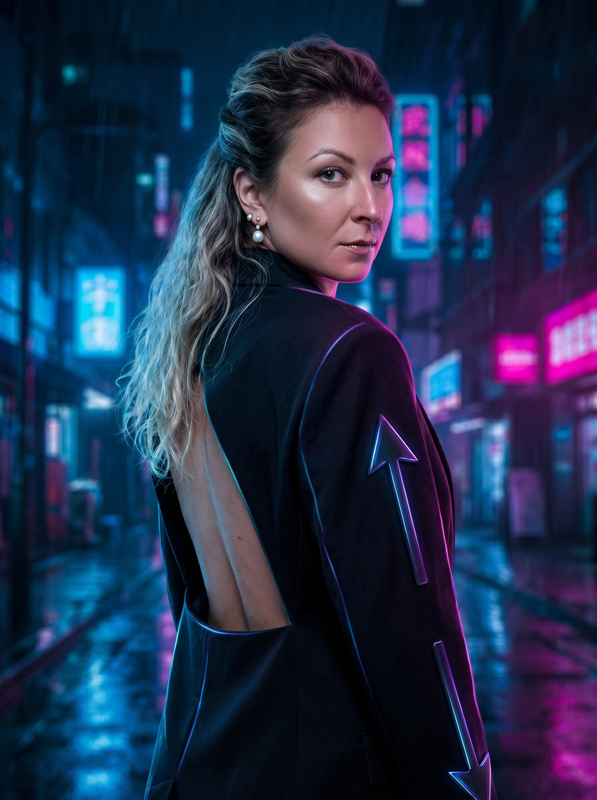
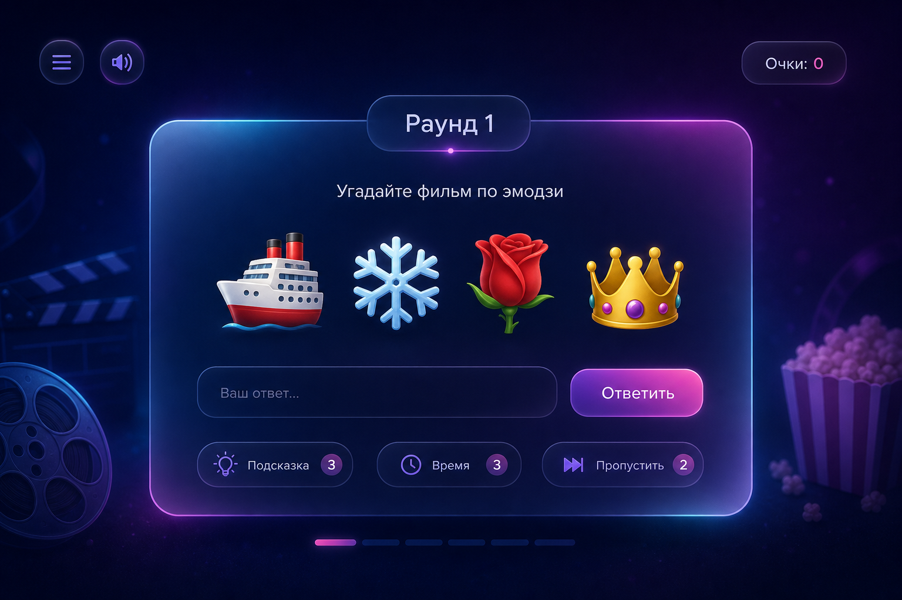
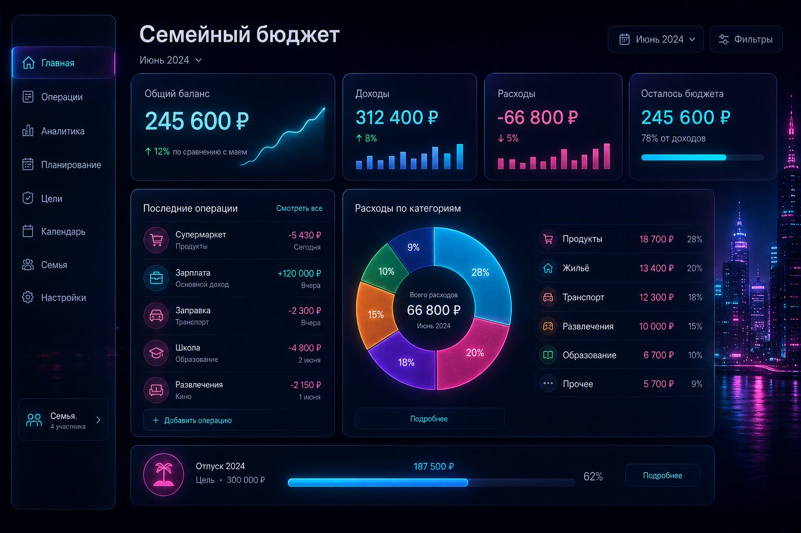
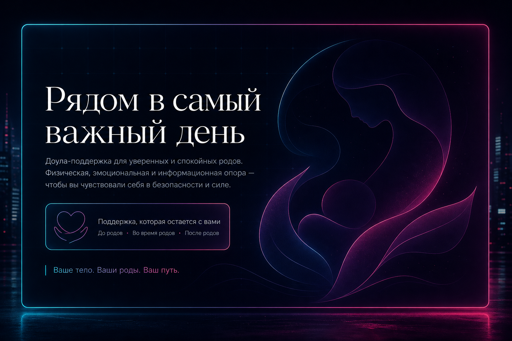

Лендинги
Сайты, которые не просто "есть", а собирают внимание, держат ритм и ведут человека по смыслу.
digital atelier · Диана Широкова
Vibe Coder / Portfolio / Web & AI Experiences

Я работаю на стыке кода, визуала, UX и AI-инструментов. Для меня сайт — это не набор блоков. Это ощущение от проекта, ритм, подача, структура и то, как человек чувствует себя внутри интерфейса.
Мой подход — сделать быстро, красиво и не бездумно. Чтобы проект не выглядел как очередной шаблон, собранный без вкуса и идеи.
Сайты, которые не просто "есть", а собирают внимание, держат ритм и ведут человека по смыслу.
Страницы, которые показывают не только работы, но и стиль, характер и уровень.
Когда нужен не просто сайт, а ощущение: атмосфера, характер, настроение, подача.
Использую нейросети как инструмент ускорения и усиления идей, а не как замену мышлению.
Продумываю, как человек читает, куда смотрит, где теряется и где принимает решение.
Могу собрать сильную первую версию быстро, без месяцев бесконечных согласований.
Я смотрю не только на задачу, но и на ощущение, которое должен передавать проект.
Красивый сайт без логики — это просто красивая обертка. Поэтому я собираю смысл, сценарий и путь пользователя.
Когда есть стиль и логика, проект собирается быстрее, точнее и выглядит сильно.
Рабочие страницы и интерактив: можно открыть в браузере, пройти сценарий и оценить логику — не только описание «на словах».

Мини-игра: эмодзи-ребусы, ввод названия, подсказки, счёт и финальный разбор раундов. Один файл, без сборки — удобно встроить в лендинг или портфолио.

Веб-приложение: доходы и расходы, счета, цели, лимиты и отчёты. Данные хранятся в браузере, есть тёмная тема и переключение RU/EN.

Одностраничный сайт: герой, услуги, отзывы, блог, FAQ и контакты. Адаптивная вёрстка, мобильное меню и спокойная типографика под тему заботы о родах.
Подборка концептов и страниц с описанием задачи и того, что сделано — в блоке ниже.
Лендинг для digital-продукта с акцентом на атмосферу, скорость восприятия и современный визуал.
Личный сайт-портфолио, который показывает не только кейсы, но и стиль человека.
Промо-страница под воронку и digital-продукт с акцентом на конверсию и легкость восприятия.
Сайт с упором на трендовую подачу, сильный первый экран и ощущение "это хочется переслать".
Три коротких голоса о совместной работе: стрелки на экране, автосмена каждые 5 секунд и полукруг из фото — порт референс-компонента на чистом HTML/CSS/JS. Сфокусируй блок (Tab) и листай клавишами ← →.


Потому что я умею видеть проект целиком. Не только как это собрать, но и как это подать, как это будет восприниматься, где человек зацепится взглядом, что запомнит и почему это будет выглядеть дороже, чем стоит.
Я соединяю: эстетика + структура + digital-мышление + скорость.
Но если честно — главный инструмент не стек, а вкус, насмотренность и умение собирать цельное впечатление.
Хороший сайт — это не когда "нормально сверстано". Это когда у проекта появляется энергия, форма и ощущение, что он живой.
Могу помочь с концепцией, структурой, упаковкой и реализацией. От первого вайба до готовой страницы.